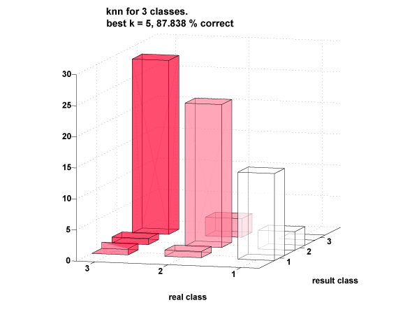
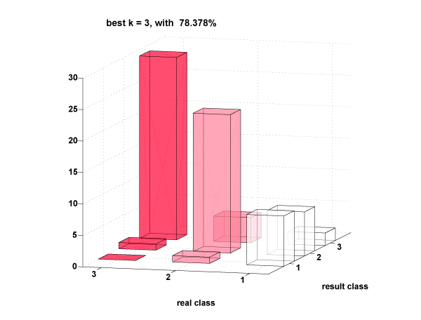

k-nearest neighbour
We ran knn with k = x (The best k was determined by cross-validation), and the best features were determined by an exhaustive search (all possible combinations of features). The results are detailed below.

The points which were misclassified had waveforms which looked as waveforms of other classes. Classification by humans was 100% incorrect (the waveforms didn’t just look random, they looked similar to other classes).

The inclusion/exclusion of a feature was tested exhaustively and the feature weights were allocated by experimentation. We also ran the knn with features extracted by doing Principal Component Analysis of the time series (of current values). The results for knn were around 10% worse. These results are of leave one out cross-validation as we felt that the data set wasn’t large enough.